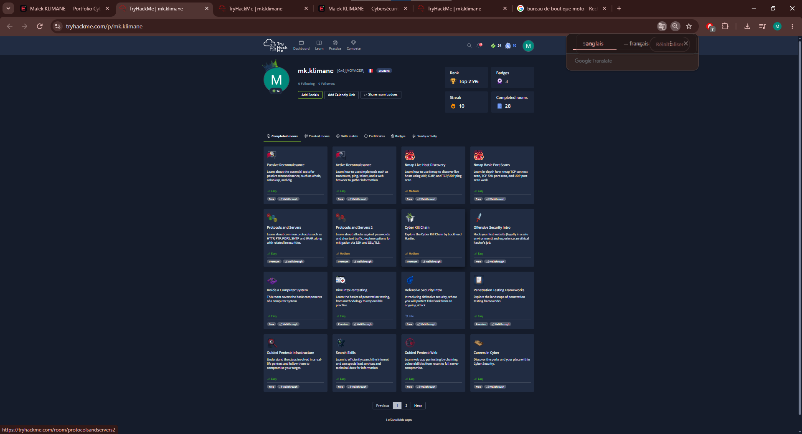
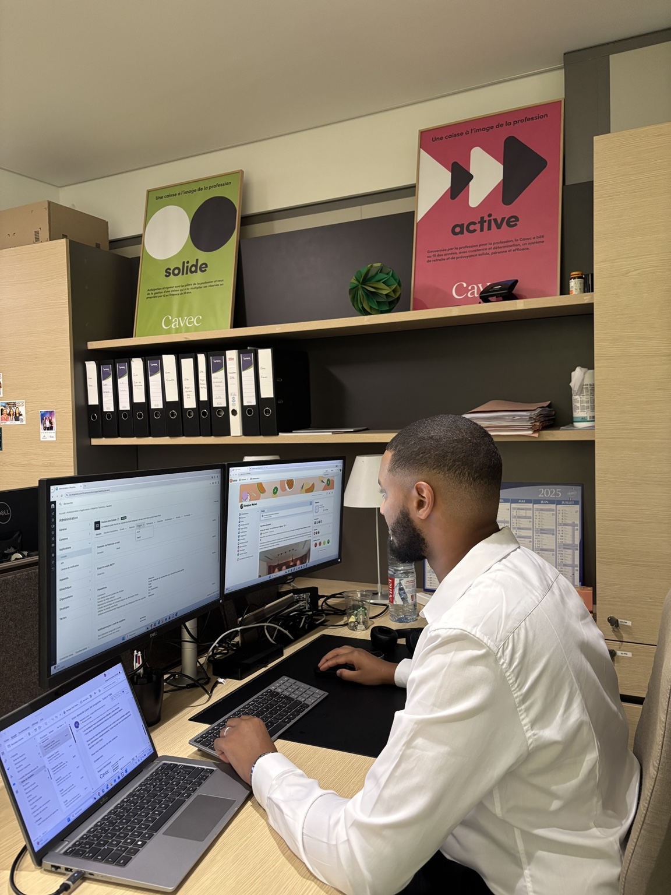
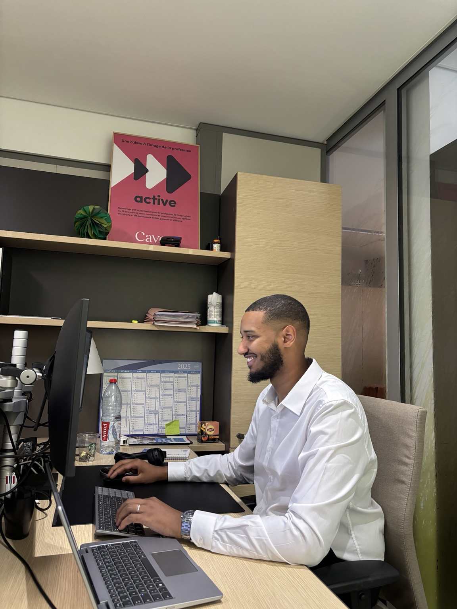
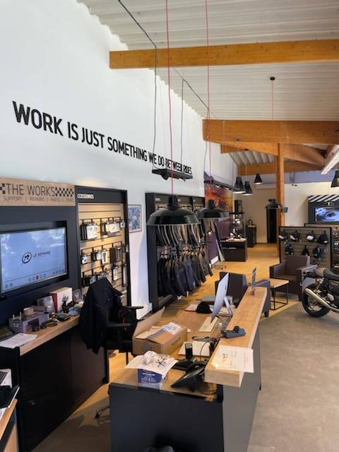
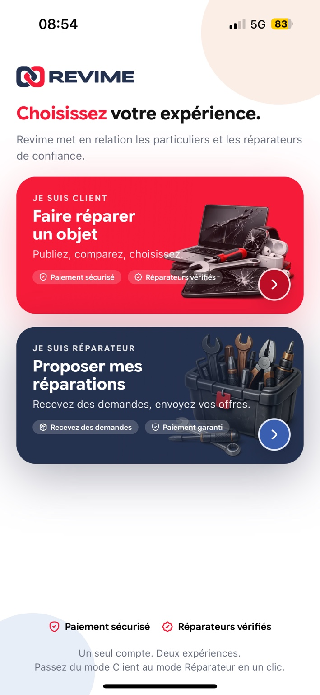
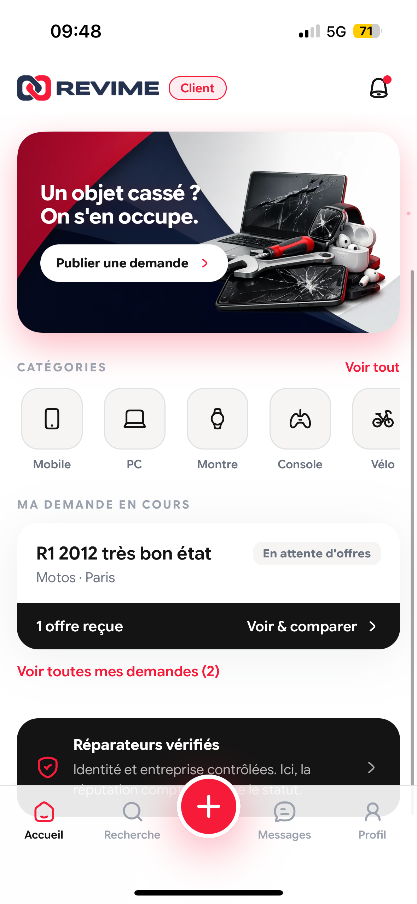
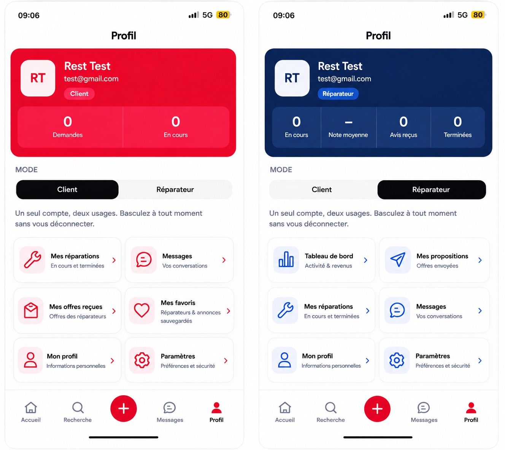

Apprendre
Formations, certifications et apprentissage continu pour consolider mes fondamentaux.
Je construis progressivement mon expertise en cybersécurité à travers des expériences techniques, des certifications, des labs et des projets concrets. Mon objectif est de découvrir les différents domaines de la sécurité informatique et de continuer à apprendre sur le terrain.
Je ne cherche pas à me limiter à une seule branche. Je souhaite explorer les différentes facettes de la cybersécurité, comprendre leurs interactions et construire mon orientation grâce à la pratique.
Formations, certifications et apprentissage continu pour consolider mes fondamentaux.
Rooms, challenges, environnements techniques et projets pour transformer la théorie en réflexes.
Des réalisations concrètes mêlant cybersécurité, systèmes, réseaux, électronique et développement.
Une preuve concrète de pratique : reconnaissance, réseau, pentest, sécurité Web, défensif et fondamentaux. Mon parcours reste volontairement généraliste pour explorer les différents domaines de la cybersécurité.
Les rooms complétées couvrent plusieurs axes : reconnaissance, Nmap, protocoles et services, pentest, Burp Suite, sécurité Web, défense et découverte des métiers cyber.

Les certificats ne sont pas seulement affichés : leur contenu est détaillé pour montrer les domaines réellement travaillés.
 2026
2026Parcours Blue Team Junior Analyst (BTJA) complété à 100 %. Centri indique que le pathway repose sur six cours obligatoires, chacun comprenant du contenu d’apprentissage et des quiz.
Découverte de la recherche proactive de menaces et des méthodes d’analyse associées.
Compréhension de l’identification, de l’évaluation et du suivi des vulnérabilités.
Introduction à l’analyse de traces et aux principes de l’investigation numérique.
Lecture et analyse des communications réseau et des éléments utiles à l’investigation.
Découverte des environnements et enjeux liés aux opérations sur le dark web.
Recherche et exploitation d’informations provenant de sources ouvertes.
 2026
2026Formation officielle Fortinet NSE 1 consacrée aux fondamentaux de la cybersécurité et du cloud. Fortinet la présente comme une introduction aux concepts et technologies de cybersécurité servant de base à des parcours plus avancés.
Acquisition des bases de la cybersécurité et découverte des principaux concepts du domaine.
Introduction aux fondamentaux du cloud et aux problématiques de sécurité associées.
Découverte des concepts et technologies de cybersécurité sur lesquels construire des connaissances plus avancées.
Parcours d’autoformation officiel Fortinet, complété dans le cadre de mon apprentissage cyber.
Une expérience d’administration systèmes et réseaux avec une dimension sécurité : gestion de parc, Active Directory, automatisation, support et sensibilisation des utilisateurs.


Une expérience terrain au cœur de la sécurité électronique, des systèmes et des réseaux, avec une forte part d’installation sur site. Intervention sur les équipements de sécurité, leur raccordement et leur mise en service, puis sur l’infrastructure réseau et les outils IT.


Intervention dans un environnement technique avec maintenance préventive et corrective, diagnostic, remplacement de composants, soudure et tests.


Gestion des réseaux sociaux, conseil personnalisé en magasin et gestion des stocks.

Un parcours construit progressivement entre électronique, réseaux, informatique et cybersécurité.
Sciences et Technologies de l’Industrie et du Développement Durable
Lycée Chaptal · Paris 9eCybersécurité, Informatique & Réseaux, Électronique
Schola Nova · ParisDouble diplôme EFREI & PST&B
Paris School of Technology & Business · ParisDeux réalisations personnelles et techniques conservées en second plan, avec leurs preuves visuelles.
Conception d'une IHM pour un banc de test de transmission sur fibre optique : Teensy 4.0, OLED SH1106, multiplexeur TCA9548A, communication I²C/SPI/UART et conception PCB.


Conception d’une application mettant en relation particuliers et réparateurs : parcours client/réparateur, demandes de réparation, comparaison des offres, profils, réparateurs vérifiés et paiement sécurisé.



Deux lettres de recommandation accessibles directement depuis le portfolio.
Recommandation liée à mon expérience en systèmes et réseaux.
Lire la recommandation ↗Recommandation liée à mon parcours BTS CIEL.
Lire la recommandation ↗À la recherche d'une alternance en cybersécurité pour continuer à apprendre, expérimenter et contribuer à des projets concrets.
{kind=link}
{kind=link}